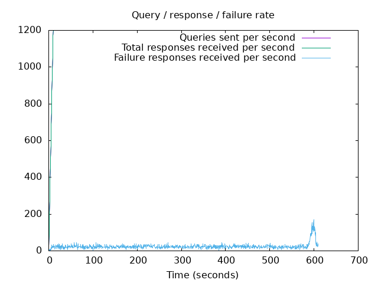
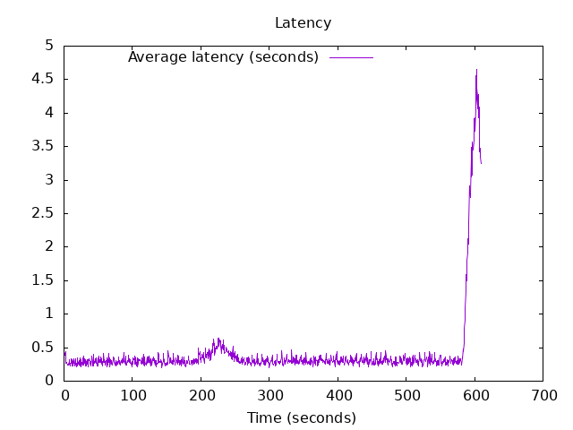

DNS Resolution Performance Testing Tool Version 2.14.0 [Status] Command line: resperf -P 20250620-1056.gnuplot -M doh -s 79.127.218.224 -O doh-uri=https://protective.joindns4.eu/dns-query -d domains_shuffled.list -C 50 -m 1200 -b 1400 -q 1000000 -R -r 10 -c 600 -t 30 -F 0 [Status] Sending [Status] Ramp-up done, sending constant traffic [Status] Waiting for more responses [Status] Testing complete Statistics: Queries sent: 725999 Queries completed: 725999 Queries lost: 0 Response codes: NOERROR 489799 (67.47%), SERVFAIL 14832 (2.04%), NXDOMAIN 221368 (30.49%) Run time (s): 625.441656 Maximum throughput: 1200.000000 qps Lost at that point: 0.00% Connection attempts: 53 (52 successful, 98.11%) DNS-over-HTTPS statistics: HTTP/2 return codes: 200: 725999
 